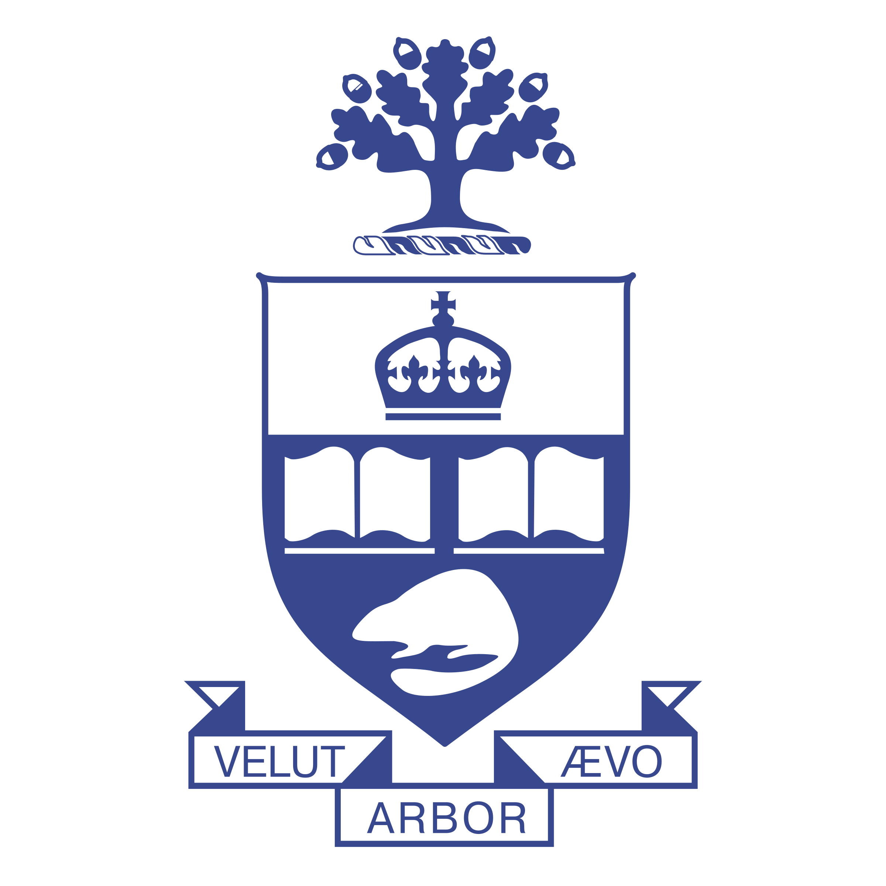

Doctoral research
University of Toronto
PhD · Civil & Structural Engineering
Research focus
Real-time aeroelastic hybrid simulation of a base-pivoting building model in a wind tunnel.
NSERC CGS-DOntario Graduate ScholarshipResearch Travel GrantConference Travel Award